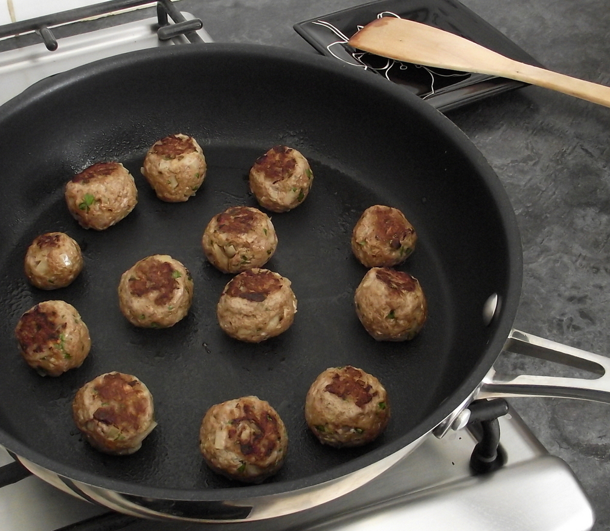

The Setup
The Kitchen is full of many great appliances to help you with cooking. The Stove and Oven are probably the most essential for the kind of food that will be discussed on this site. A Wok would definitely be handy but by no means mandatory. The Appliances are not the only thing you'll need! Make sure you've got a good selection of kitchenware tools like a spatula and tongs, there are a few dishes that may require more but your in a flat, you've sometimes go to make do with what you have. So don't sweat it if you haven't got anything else. Bowls and Plates are essential though so make sure you've got some clean ones before you start cooking. Oh and remember knifes and forks, your flat mates will most likely enjoy the use of those.
The essentials of cooking.
At its most very basic level here is a basic set up for a meal Meats + Carbs + Vegetables = Dinner.
Tips:
- Don't undercook chicken
- Don't undercook chicken
- Don't undercook rice
- Salt & Pepper always
- Add Morroccan Spice (most often)
- Teaspoon of fish sauce in every dish
This is the current amount of people in the world that undercooked their chicken since you opened this site
20
watch out
Flat - Residential Restaurant
Here is some information about each person in this flat, each has a different dynamic and style of cooking. They have some helpful advice and insight into cooking from different angles.
Flatmate No 1:

Joseph The Double Carb
Joseph is a fan of hearty carb-filled meals, with meals ranging from mashed potato on focaccia bread to spaghetti bolognese with extra parmesan. He comes from a farming background so his enthusiasm for game meats is inspiring. On occasions he will treat the flat to beef mince from his own farm in the rich farming area of Havelock North in the Hawkes Bay Gulf. His meals are always seasoned to perfection due to his history in the culinary arts in cafes and restaurants across the North Island (currently working at the Verve Cafe on Lambton Quay). The base ideas for his meals come from the convenient Pantry Check Method (simply evaluating the current ingredient selection in the kitchen). These idea's are heightened by his knowledge of cuisine and with the simple rule of thumb; don't forget your seasonings.
Joeys Weekly Tip:
"If you don't have access to button mushrooms, psilocyben mushrooms will suffice in a pinch."

Donaldson The Hit and Miss
Donaldson is known for pushing the boundaries of culinary perfection, though it comes with the price of being very inconsistent. He is inspired by his favorite chef of all time Gordon Ramsay. He has acquired a range of skills from idol. Coming from South Africa, he can't get enough of his spices creating an authentic taste with nearly every meal. A chicken lover on most nights, he will make anything from a Chicken Korma to Roast Chicken. He recently picked up a slow cooker and with this he continues to amaze. Slow cookers are great for anyone who is organized and time-efficient. A food enthusiast at the worst of times, Donaldson provides the rule of thumb "always cook with fresh ingredients".

Scott Stir Fry Madness
Scott is a very efficient cook, he discovers and creates meals that have 0% chance of going wrong. Meals such as stir fries, fried rice and gourmet sausage sizzles play are some of his preferred meals to cook. He comes from a beach culture and his meals often have summery feel to them, his tools of choice are the Wok or the BBQ. Generally you'll see a great ratio of vegetables to meat to carbs throughout his dishes. He always leaves the flat mates full and satisfied after each meal. His rule of thumb is: "if its fast and fulling you'll have happy customers".

Sean Oriental King
Sean loves his oriental food. Coming from a rich heritage in Samoa and China, he has learned from one of the best teachers, his mother. His meals are rich in spices and use mainly noodles or rice to ground them. On occasion you will get a curry which will leave your taste buds raging hot, but the generous portion sizes leave the flat ties content.

Louis Burgerman
Louis is a fast chef, the pan being his number one appliance. He creates meals that are quite diverse in ethnicity from tacos to curry. Most of his meals will contain Moroccan spice to liven the pallet. His rule of thumb is: "a quickies a goodie"
Working Together
Sometimes it can be hard adapting to cooking for larger audiences, but the key is the more the merrier. Though in saying that you do not want to be buying twice as much as need, price is important especially when you are in a flat full of students. This is around 250gm of mince per person in most of the meals the flat eats. Remember to communicate with each other about what meals you are going to or want to cook. This will help you avoid eating chicken carbonara for the whole week.
Cutting Onions
Quick Easy Meals
Recipe Info: Ingredients: 400g Lamb Mince 1 small Onion, finely chopped 2 Garlic Cloves, finely chopped 1/2 tsp Cayenne Pepper 1 Egg, beaten 2 Slices Bread Low Fat Bolognese Sauce 1/2 tsp Paprika With these ingredients follow the instructions on this link. KitchenMason
Recipe Info: Ingredients: For the Bolognese Sauce 1 Medium sized Onion 1 Clove of Garlic Olive Oil 250g Lean Beef Steak Mince 400g Tin of Chopped Tomatoes 1 tsp Sugar Salt & Pepper For the White Sauce 1/4 small Onion 350ml Semi Skimmed Milk (or prefferred milk) 3 Black Peppercorns * 18g Salted Butter 23g Plain Flour 35g Parmesan Cheese, grated Salt & Pepper For the Lasagne Approx 5-6 standard sized Dried Egg Lasagne Sheets 1 Large Tomato (optional) Click here to see full recipe KitchenMason